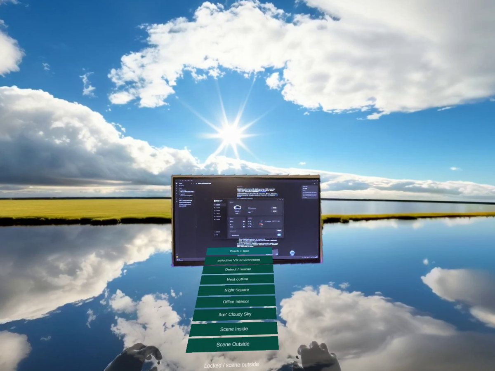
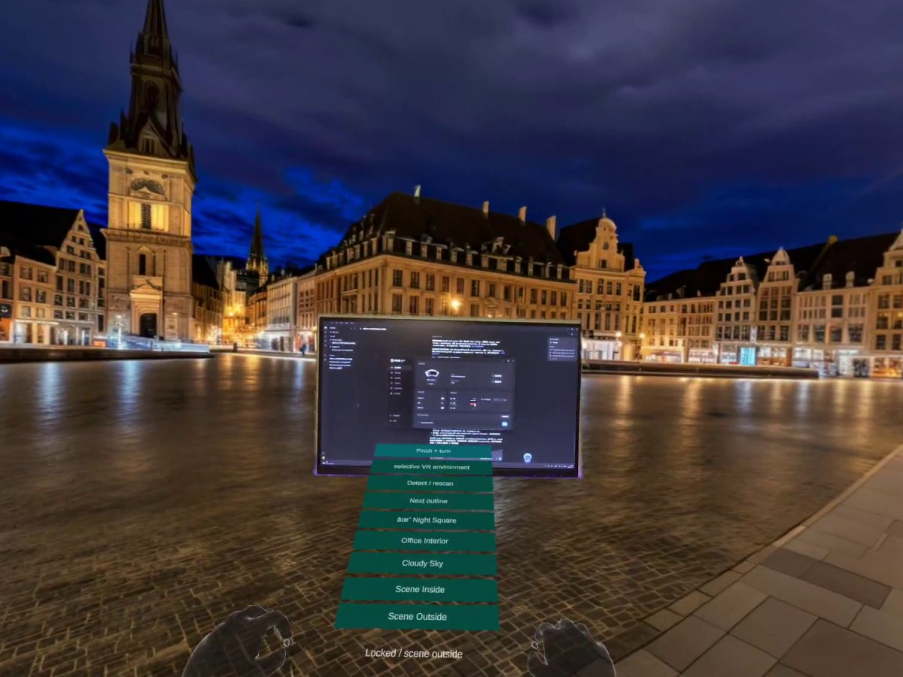
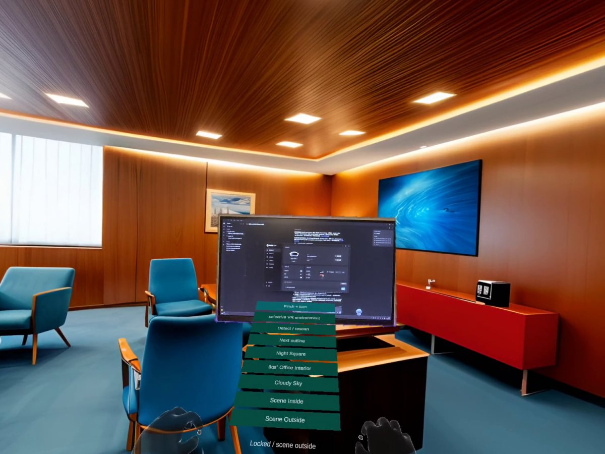

Two projects, combined
SAM 2 + a portal.
From Selective Passthrough: SAM 2 outlines a real object, here a monitor, and anchors its contour in 3D. From MR to VR Portal: that contour becomes a portal. The user chooses which side of it stays real.
VR inside the object.
The room stays real. The monitor becomes a window to another world.
The object inside VR.
The room becomes VR. The real monitor stays, so you can keep working.
Potential application
Study in different environments.
The room changes; the real screen does not. A student keeps working on the same computer, now in an open landscape, a lively city or a quiet office.


